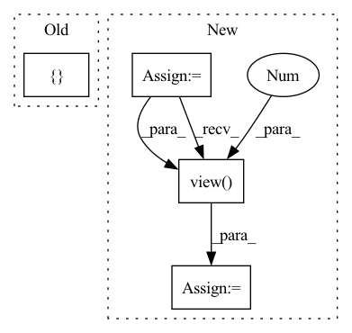

Pattern ID :1364

Before Change
indices_and_rois = torch.cat([roi_indices[:, None], rois], dim=1)
xy_indices_and_rois = indices_and_rois[:, [0, 1, 2, 3, 4]]
indices_and_rois = xy_indices_and_rois.contiguous()
// 利用建议框对公用特征层进行截取
pool = self.roi(x, indices_and_rois)
After Change
rois = rois.cuda()
rois_feature_map = torch.zeros_like(rois)
rois_feature_map[:, [0,2]] = rois[:, [0,2]] / img_size[1] * x.size()[3]
rois_feature_map[:, [1,3]] = rois[:, [1,3]] / img_size[0] * x.size()[2]
indices_and_rois = torch.cat([roi_indices[:, None], rois_feature_map], dim=1)
//-----------------------------------//
// 利用建议框对公用特征层进行截取
//-----------------------------------//
pool = self.roi(x, indices_and_rois)
//-----------------------------------//
// 利用classifier网络进行特征提取
//-----------------------------------//
fc7 = self.classifier(pool)
// 当输入为一张图片的时候，这里获得的f7的shape为[300, 2048]
fc7 = fc7.view(fc7.size(0), -1)
roi_cls_locs = self.cls_loc(fc7)
roi_scores = self.score(fc7)
roi_cls_locs = roi_cls_locs.view(n, -1, roi_cls_locs.size(1))
roi_scores = roi_scores.view(n, -1, roi_scores.size(1))
return roi_cls_locs, roi_scores
def normal_init(m, mean, stddev, truncated=False):
In pattern: SUPERPATTERN
Frequency: 3
Non-data size: 4
Instances
Fragment ID: 4730777
Project Name: bubbliiiing/faster-rcnn-pytorch
Commit Name: d456f02a402fd8cf8db1d991aa612439b3c0ffb2
Time: 2021-01-30
Author: 47347516+bubbliiiing@users.noreply.github.com
File Name: nets/classifier.py
M Class Name: Resnet50RoIHead
N Class Name: Resnet50RoIHead
M Method Name: forward(5)
N Method Name: forward(4)
M Parent Class: nn.Module
N Parent Class: nn.Module
M File Name: nets/classifier.py
N File Name: nets/classifier.py
M Start Line: 68
M End Line: 77
N Start Line: 82
N End Line: 107
'>
Before Change
rois = rois.cuda()
indices_and_rois = torch.cat([roi_indices[:, None], rois], dim=1)
xy_indices_and_rois = indices_and_rois[:, [0, 1, 2, 3, 4]]
indices_and_rois = xy_indices_and_rois.contiguous()
// 利用建议框对公用特征层进行截取
pool = self.roi(x, indices_and_rois)
After Change
rois = rois.cuda()
rois_feature_map = torch.zeros_like(rois)
rois_feature_map[:, [0,2]] = rois[:, [0,2]] / img_size[1] * x.size()[3]
rois_feature_map[:, [1,3]] = rois[:, [1,3]] / img_size[0] * x.size()[2]
indices_and_rois = torch.cat([roi_indices[:, None], rois_feature_map], dim=1)
//-----------------------------------//
// 利用建议框对公用特征层进行截取
//-----------------------------------//
pool = self.roi(x, indices_and_rois)
//-----------------------------------//
// 利用classifier网络进行特征提取
//-----------------------------------//
pool = pool.view(pool.size(0), -1)
// 当输入为一张图片的时候，这里获得的f7的shape为[300, 4096]
fc7 = self.classifier(pool)
roi_cls_locs = self.cls_loc(fc7)
roi_scores = self.score(fc7)
roi_cls_locs = roi_cls_locs.view(n, -1, roi_cls_locs.size(1))
roi_scores = roi_scores.view(n, -1, roi_scores.size(1))
return roi_cls_locs, roi_scores
'>
Fragment ID: 4730767
Project Name: bubbliiiing/faster-rcnn-pytorch
Commit Name: d456f02a402fd8cf8db1d991aa612439b3c0ffb2
Time: 2021-01-30
Author: 47347516+bubbliiiing@users.noreply.github.com
File Name: nets/classifier.py
M Class Name: VGG16RoIHead
N Class Name: VGG16RoIHead
M Method Name: forward(5)
N Method Name: forward(4)
M Parent Class: nn.Module
N Parent Class: nn.Module
M File Name: nets/classifier.py
N File Name: nets/classifier.py
M Start Line: 31
M End Line: 39
N Start Line: 33
N End Line: 59
'>
Before Change
cb = repeat(cb)
cr = repeat(cr)
return torch.cat([y.unsqueeze(3), cb.unsqueeze(3), cr.unsqueeze(3)], dim=3)
class YCbCr2RGBJpeg(nn.Module):
After Change
def forward(self, x: torch.Tensor) -> torch.Tensor:
height, _ = x.shape[1:3]
batch_size = x.shape[0]
x_reshaped = x.view(batch_size, height // self.k, self.k, -1, self.k)
x_transposed = x_reshaped.permute(0, 1, 3, 2, 4)
out = x_transposed.contiguous().view(batch_size, -1, self.k, self.k)
return out
'>
Fragment ID: 4730774
Project Name: lornatang/real_esrgan-pytorch
Commit Name: edfbb6820fc2084c2ffe132e9b64a348a323d1e7
Time: 2022-06-16
Author: liuchangyu1111@gmail.com
File Name: imgproc.py
M Class Name: ChromaUpsampling
N Class Name: _BlockSplitting
M Method Name: forward(2)
N Method Name: forward(4)
M Parent Class: nn.Module
N Parent Class: nn.Module
M File Name: imgproc.py
N File Name: imgproc.py
M Start Line: 1770
M End Line: 1789
N Start Line: 1230
N End Line: 1237